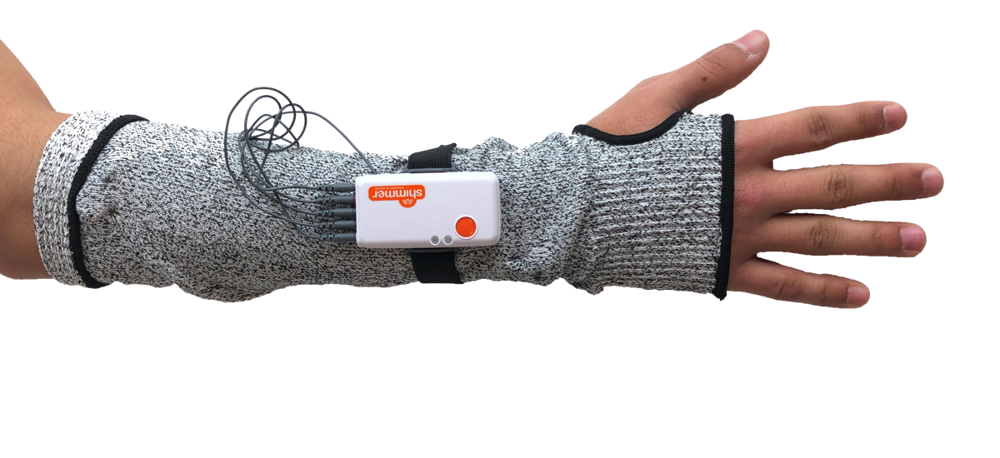
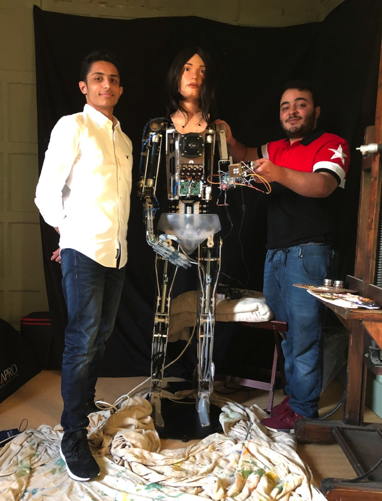
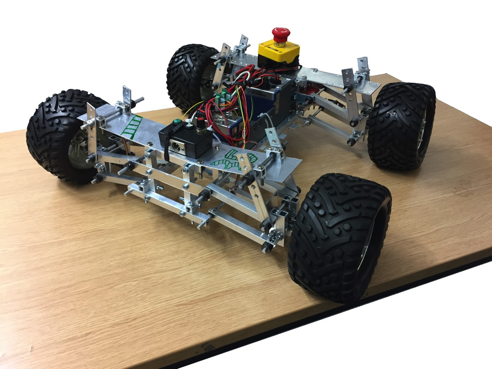
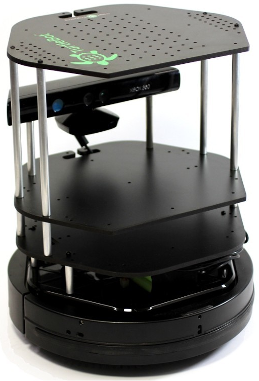
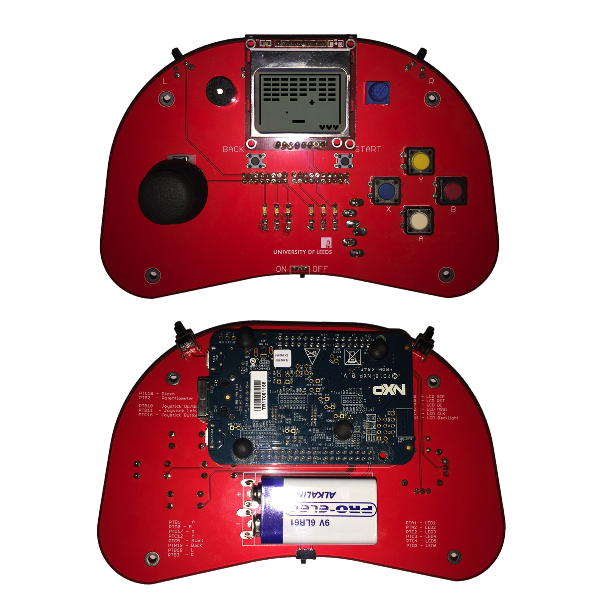
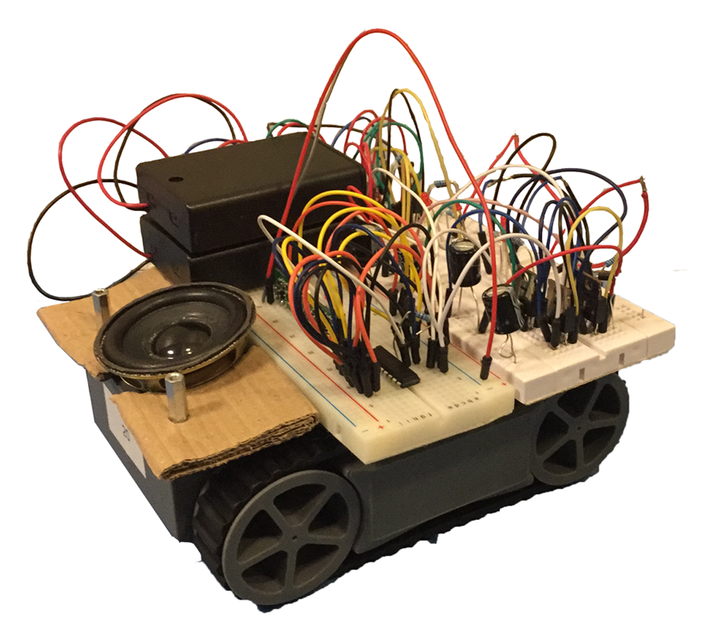

My Major Projects
Mastering the art of mechatronics & robotics, one project at a time…
A Robotic Arm Controlled by Neuromuscular Interface
This was my third year engineering bachelors project.
In a nutshell, I worked on using EMG sensors to detect neuromuscular signals from the upper limb to control a robotic arm. I implemented machine learning algorithms to train my system for accurate gesture recognition.
Stroke survivors suffer from severe muscle weakness, especially in their arms. My research contributed to the massive study of neuromuscular rehabilitation, bringing such survivors one step closer to being able to control prosthetic hands. I demonstrated, for the first time, the feasibility of using 3D-printed electrodes in capturing neuromuscular data non-invasively.
Innovating a way to advance in this field led to an invitation to present my research paper at the International IEEE/ASME Advanced Intelligent Mechatronics conference (Hong Kong, 2019). This was truly an incredible experience.
The hardware was modeled with the patient's convenience in mind. I created a wireless, wearable device that can easily be used:
In a nutshell, I worked on using EMG sensors to detect neuromuscular signals from the upper limb to control a robotic arm. I implemented machine learning algorithms to train my system for accurate gesture recognition.
Stroke survivors suffer from severe muscle weakness, especially in their arms. My research contributed to the massive study of neuromuscular rehabilitation, bringing such survivors one step closer to being able to control prosthetic hands. I demonstrated, for the first time, the feasibility of using 3D-printed electrodes in capturing neuromuscular data non-invasively.
Innovating a way to advance in this field led to an invitation to present my research paper at the International IEEE/ASME Advanced Intelligent Mechatronics conference (Hong Kong, 2019). This was truly an incredible experience.
The hardware was modeled with the patient's convenience in mind. I created a wireless, wearable device that can easily be used:

Robotic Colonoscopy Arm
Early detection is paramount with cancer. Colonoscopy is the most effective method for diagnosis. Patients, however, fear the current colonoscopy method due to its invasiveness, discomfort and pain.
Researchers have been looking a different methods of undertaking colonoscopies using freely moving capsule robots. Since locomotion in such an environment is challenging, a solution is the use of magnetic capsules that can be guided around the colon using an external magnet mounted on a robotic arm.
This leads to a less invasive method of undertaking colonoscopies which in turn may lead to an increased uptake in screening for CRC in the UK and worldwide.
I worked in a team to design an autonomous mechatronic arm using SolidWorks and build it from scratch.
Its function was to guide a micro robot inside the body from the outside, hopefully revolutionising colonoscopy procedures by making them non-invasive, more accurate, and much easier to perform.
Researchers have been looking a different methods of undertaking colonoscopies using freely moving capsule robots. Since locomotion in such an environment is challenging, a solution is the use of magnetic capsules that can be guided around the colon using an external magnet mounted on a robotic arm.
This leads to a less invasive method of undertaking colonoscopies which in turn may lead to an increased uptake in screening for CRC in the UK and worldwide.
I worked in a team to design an autonomous mechatronic arm using SolidWorks and build it from scratch.
Its function was to guide a micro robot inside the body from the outside, hopefully revolutionising colonoscopy procedures by making them non-invasive, more accurate, and much easier to perform.

Ai-Da Robot
Ai-Da is the biggest project I have worked on, for she is the world's first ultra-realistic robot artist. Find out about my involvement with this massive project here.

Autonomous Rover
A rover, with a decent suspension system, was to be designed and built. It had to be autonomous so it maintains a straight path regardless of how bumpy the terrain is. All that had to be done while making sure the rover drives as fast as possible.
The idea was to integrate negative feedback control to make sure the rover does not deviate from its path. This was meticulously implemented using labVIEW on cRIO.
As for the hardware, we designed a unique suspension system based on what we were taught on vibrations & control. The chassis as well was designed from scratch with durability, lightweight and compactness in mind. This was done on Solidworks.
This project was sponsored by Jaguar.
The idea was to integrate negative feedback control to make sure the rover does not deviate from its path. This was meticulously implemented using labVIEW on cRIO.
As for the hardware, we designed a unique suspension system based on what we were taught on vibrations & control. The chassis as well was designed from scratch with durability, lightweight and compactness in mind. This was done on Solidworks.
This project was sponsored by Jaguar.

An Autonomous Turtlebot Explorer
Within a group, I implemented a program that plays Robotic Cluedo.
Slightly different than the board game, Robotic Cluedo involves programming a Turtlebot that needs to autonomously visit a room in an arena and identify the character and weapon in the room along with their location.
Coding was done in Python. We used various computer vision algorithms along with intelligent path planning techniques for the bot to visualise its surroundings and explore on its own.
Slightly different than the board game, Robotic Cluedo involves programming a Turtlebot that needs to autonomously visit a room in an arena and identify the character and weapon in the room along with their location.
Coding was done in Python. We used various computer vision algorithms along with intelligent path planning techniques for the bot to visualise its surroundings and explore on its own.

C++ Breakout Game
I put together and soldered a game controller with buttons, potentiometers and other elements, along with an mbed microcontroller.
I then coded onto it a unique version of the game Atari Breakout using C++ language to be played using the buttons and various controllers on the gamepad.
I then coded onto it a unique version of the game Atari Breakout using C++ language to be played using the buttons and various controllers on the gamepad.

Remote-Control Buggy
As a team, we built a remotely controlled car which functions on high- frequency radio waves. My role was ensuring the flawless functionality of the wireless transmission of signals, involving encoders, decoders, transmitters and receivers. I also programmed an Arduino Uno to implement control of the buggy using an analogue joystick.
